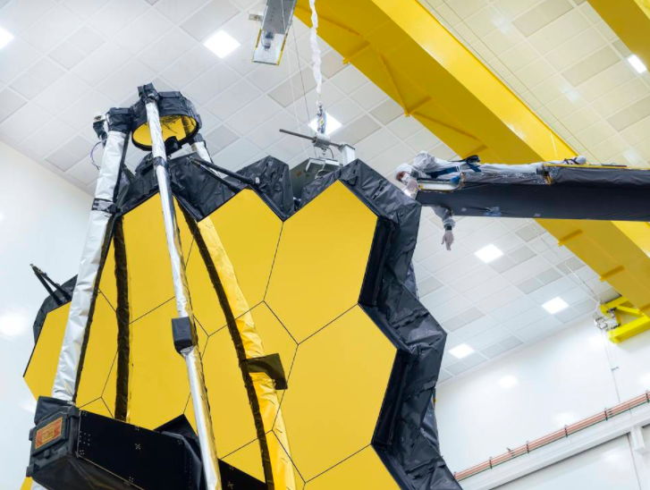

Webb’s Golden Mirror Wings Open One Last Time on Earth
For the last time while it is on Earth, the world’s largest and most powerful space science telescope opened its iconic primary mirror. This event marked a key milestone in preparing the observatory for launch later this year.
As part of the NASA’s James Webb Space Telescope’s final tests, the 6.5 meter (21 feet 4 inch) mirror was commanded to fully expand and lock itself into place, just like it would in space. The conclusion of this test represents the team’s final checkpoint in a long series of tests designed to ensure Webb’s 18 hexagonal mirrors are prepared for a long journey in space, and a life of profound discovery. After this, all of Webb’s many movable parts will have confirmed in testing that they can perform their intended operations after being exposed to the expected launch environment.
“The primary mirror is a technological marvel. The lightweight mirrors, coatings, actuators and mechanisms, electronics and thermal blankets when fully deployed form a single precise mirror that is truly remarkable,” said Lee Feinberg, optical telescope element manager for Webb at NASA's Goddard Space Flight Center in Greenbelt, Maryland. “This is not just the final deployment test sequence that the team has pulled off to prepare Webb for a life in space, but it means when we finish, that the primary mirror will be locked in place for launch. It’s humbling to think about the hundreds of dedicated people across the entire country who worked so hard to design and build the primary mirror, and now to know launch is so close.”
Making the testing conditions close to what Webb will experience in space helps to ensure the observatory is fully prepared for its science mission one million miles away from Earth.
Commands to unlatch and deploy the side panels of the mirror were relayed from Webb’s testing control room at Northrop Grumman, in Redondo Beach, California. The software instructions sent, and the mechanisms that operated are the same as those used in space. Special gravity offsetting equipment was attached to Webb to simulate the zero-gravity environment in which its complex mechanisms will operate. All of the final thermal blanketing and innovative shielding designed to protect its mirrors and instruments from interference were in place during testing.
To observe objects in the distant cosmos, and to do science that’s never been done before, Webb’s mirror needs to be so large that it cannot fit inside any rocket available in its fully extended form. Like a piece of origami artwork, Webb contains many movable parts that have been specifically designed to fold themselves to a compact formation that is considerably smaller than when the observatory is fully deployed. This allows it to just barely fit inside a 16-foot (5-meter) rocket fairing, with little room to spare.
To deploy, operate and bring its golden mirrors into focus requires 132 individual actuators and motors in addition to complex backend software to support it. A proper deployment in space is critically important to the process of fine-tuning Webb’s individual mirrors into one functional and massive reflector. Once the wings are fully extended and in place, extremely precise actuators on the backside of the mirrors position and bend or flex each mirror into a specific prescription. Testing of each actuator and their expected movements was completed in a final functional test earlier this year.